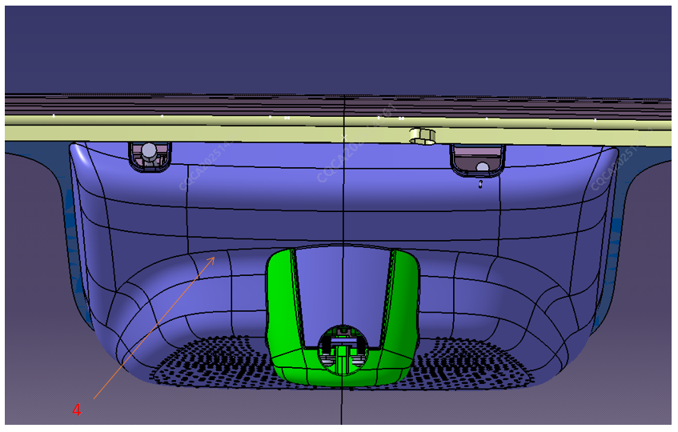
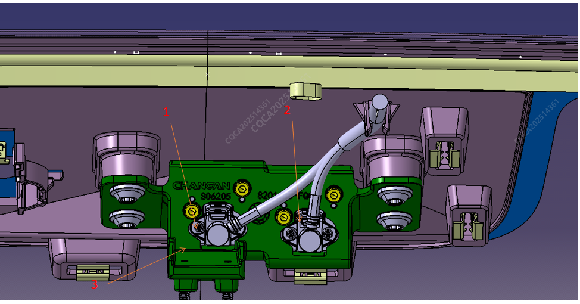

Передний солнцезащитный козырек

Камера переднего обзора и кронштейн

|
№ |
Компонент |
№ |
Компонент |
|---|---|---|---|
|
1 |
Короткофокусная камера переднего обзора |
2 |
Длиннофокусная камера переднего обзора |
|
3 |
Кронштейн камеры |
4 |
Передний солнцезащитный козырек |
Снятие
| Инструмент | Крестовая отвертка, отвертка с внутренним шестигранником M3 |
| Момент затяжки | 3.5±0.5N，5±1N |
1. Снять декоративную накладку ветрового стекла
2. С помощью крестовой отвертки выкрутить крепежные винты кронштейна камеры и основания
3. С помощью отвертки с внутренним шестигранником выкрутить винты крепления кронштейна камеры к камере
4. Снять камеру
Установка
Установку камеры выполнять в порядке, обратном снятию. После снятия и установки камеры необходимо в соответствии с требованиями к калибровке выбрать соответствующий сценарий, войти в инженерный режим EDC, с помощью сервисного диагностического прибора заново выполнить калибровку камеры и подтвердить успешность калибровки, в противном случае это ухудшит работу функций интеллектуального вождения